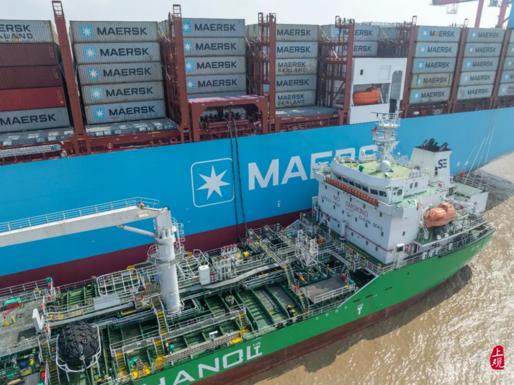
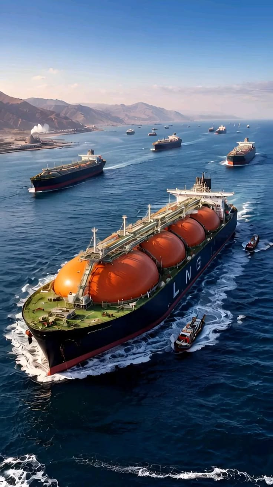

智能船舶可用「感知、连接、分析、决策、执行」理解，并落到配载、船桥、靠泊、船岸协同、网络安全与数字孪生。绿色则是多条燃料路线并行。点选阅读完整课文。
传统船舶也有传感器和报警，但智能船舶强调的是：数据是否系统采集、设备能否互联、系统能否识别趋势并提前维护、能否在经营约束下优化航行，以及在联网后如何保证安全。当前多数「智能」仍是辅助决策，完全自主航行还需要解决复杂天气、通信中断、设备故障、责任认定和国际法规等问题。
共 11 个知识点。点击卡片，下方展开详细说明。
设备和环境数据
船内外数据互通
识别趋势与异常
提前安排检修
速度与油耗平衡
强度、稳性与效率
辅助驾驶决策
推进器协同控制
远程分析与自治
控制系统防护
运营状态的数字分身
传统船舶也有传感器，但智能船舶会更系统地采集数据，包括主机温度、油压、燃油流量、振动、轴系状态、发电机负荷、船体应力、舵角、航速、风速、浪高、吃水和货舱状态。
传感器数量增加并不等于智能。关键在于这些数据是否准确、连续、可追溯，能否在海上断网时继续工作。没有可信数据，后面的分析、预测和维护都只是空中楼阁。
船舶上的发动机、配电柜、导航设备、泵阀和安全系统往往来自不同厂商。如果设备之间不能共享数据，船东看到的就只是许多孤立的仪表。
智能船舶需要统一的数据接口和通信网络，把设备、船桥、机舱、货舱和岸基控制中心连接起来。连接还必须考虑实时性、冗余和网络安全——既要快，又要在局部故障时不瘫痪，还要防止被攻击。
普通监控系统通常只在设备超过报警阈值时提醒船员。智能系统则会分析趋势，例如：发动机振动是否持续增加；某个轴承温度是否缓慢升高；油耗是否偏离历史基线；发电机效率是否下降；泵的工作状态是否异常。
这样可以在设备彻底故障之前发现风险。趋势分析依赖历史基线与工况对齐：同样的振动，在不同海况与负荷下含义不同，这也是船舶数据分析比普通工厂更难的原因之一。
传统维修通常按固定周期进行，或者等设备故障后抢修。预测性维护会根据设备状态判断剩余寿命和故障概率。
例如，系统发现某台发电机的振动模式与历史故障案例相似，就可以建议船东在下一次靠港时检查，避免设备在远洋航行中停机。其价值在于：减少非计划停航、降低备件库存、减少人员出海检修，并提高船舶可用率。
船舶油耗与速度、风浪、海流、吃水和船体状态有关。智能航行系统可以综合天气、海况、港口窗口和货物交付要求，给出更节油的航线和速度建议。
系统需要在到港时间、燃料成本、天气风险和港口等待之间寻找平衡，避免把「跑得越慢越好」当成唯一目标。对船东而言，这是把气象与机况数据直接翻译成经营决策。
集装箱船需要决定每个箱子放在哪里。配载不仅要考虑重量，还要考虑船体强度、稳性、危险品隔离、卸货顺序和港口作业效率。
智能配载系统可以快速检查各种方案，减少人工试错，并提前发现超重、偏载和卸货冲突问题。它是典型的「船舶工程约束 + 算法搜索」交叉场景。
智能船桥会融合雷达、电子海图、AIS、视觉、卫星定位、气象和海流信息，为船员提供航迹规划、碰撞预警和靠泊建议。
当前多数系统仍然是辅助驾驶，最终决策通常由船员负责。完全自主航行还需要解决复杂天气、通信中断、设备故障、责任认定和国际法规等问题。更现实的市场方向是可靠的人机协同：什么时候自动，什么时候交给船员，系统如何解释决策，事故责任如何划分。
自动靠泊系统会根据船舶位置、速度、风流和码头信息，控制推进器和舵机，让船舶更平稳地接近泊位。
动力定位（DP）系统则通过多个推进器维持船舶在指定位置，常用于海上钻井平台、风电安装船、海底施工船和科考船。这类能力对传感器、控制冗余与推力分配算法要求极高，也是高端自动化的代表场景。
智能船舶不再是孤立运行的船。船上的数据可以传回岸基中心，岸基人员能够远程分析设备状态、更新航线、优化燃油和安排维修。
但船岸协同不能完全依赖持续联网，因为远洋船舶可能遇到信号弱、延迟高或通信中断。因此系统必须具备边缘计算和离线运行能力：船上能先自治，岸上再做深度分析与计划优化。
船舶越来越像一座联网的工业控制系统，也会面临勒索软件、恶意入侵、远程控制和供应链攻击。网络安全需要覆盖：船岸通信、设备身份认证、访问权限、网络分区、日志审计、补丁升级、备份恢复、断网应急模式。
未来网络安全会成为船舶设计、建造和运营的基础要求，需要在交付前纳入整体方案。难点在于：船上设备寿命长达十几年甚至几十年，无法像普通电脑一样频繁打补丁；还需适应卫星链路、多供应商接入和船级社认证，并在不影响安全航行的前提下做加固。
数字孪生可以理解为一艘真实船舶的“数字分身”。它以设计图纸和设备清单为基础，持续接收主机、发电机、推进器、货舱、导航设备和环境传感器的数据，再叠加航行记录、维修历史、故障案例和船级社要求。
这份数字档案会随着船舶运行不断更新。工程师查看的内容不只是三维外观，还包括设备当前工况、历史趋势、异常原因、维修记录和未来风险。设计、建造、交付和运营阶段的数据因此能够接续起来，减少“交船后重新建档”的信息断层。
数字孪生的核心价值在于让数据参与诊断、预测和决策。只有把模型与真实运行数据、维修结果和工程规则持续校准，系统才能成为船员、工程师和船东的工作工具。
没有唯一正确答案。切换燃料阅读完整利弊分析。


LNG 技术较成熟，可以降低硫氧化物和部分氮氧化物排放，但需要低温储罐和专用加注设施，还可能存在甲烷逃逸问题。对船厂与船东而言，LNG 既是运输货种，也是推进燃料选项，相关设计、加注与操作经验相对丰富，因此常被视作绿色转型的「过渡主力」之一。
甲醇常温下为液体，储存和加注相对容易，船舶改造难度低于氢和氨。但它能量密度较低，需要更大的燃料舱；绿色甲醇供应也有限。甲醇路线的关键问题，往往不只在船上燃烧，而在上游是否有足够的绿色甲醇产能与港口加注网络。
氨在燃烧过程中不直接产生二氧化碳，是远洋船舶的重要候选燃料。但氨有毒、易泄漏，燃烧稳定性、氮氧化物和安全隔离问题都需要解决。围绕氨燃料，需要新的设计、仿真、泄漏检测、通风控制、应急推演与船级社审查工具——这也是「新燃料软件工具链」市场空白的来源。
氢适合燃料电池和短途船舶，但储存、运输和加注困难，体积能量密度低，目前还不适合大规模远洋船舶。氢更多出现在特定短途、港口与示范项目中，远洋主力地位仍受储运与加注基础设施制约。
电池适合短途客船、渡船、港口作业船和内河船。远洋船舶由于航程长、能量需求大，通常会采用混合动力或多燃料方案。电池路线与高频靠港、岸电条件好的航线更匹配；远洋场景则更可能是「电池 + 燃料」的组合优化。